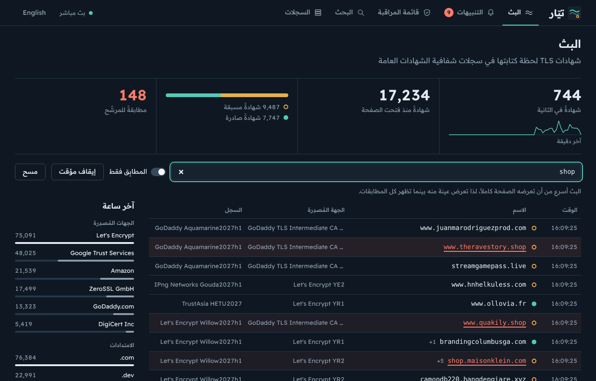
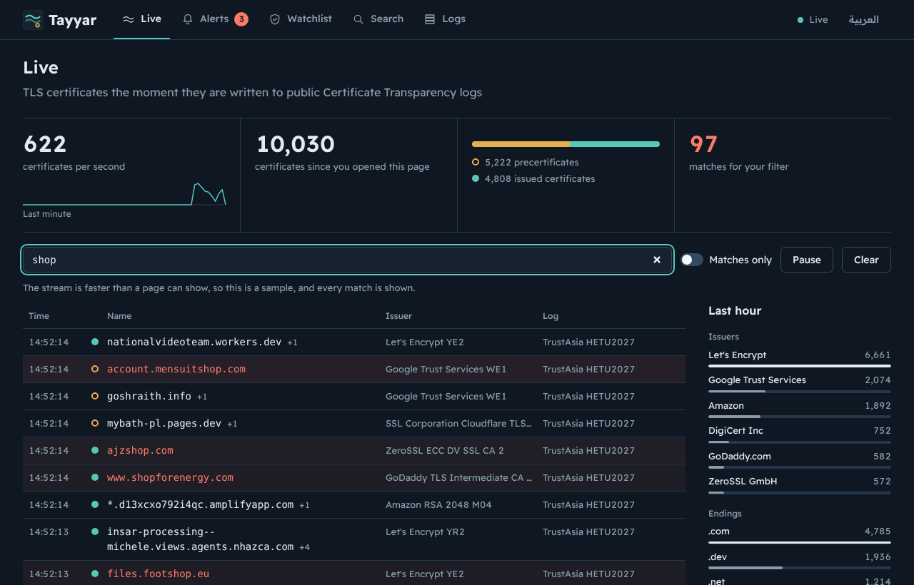
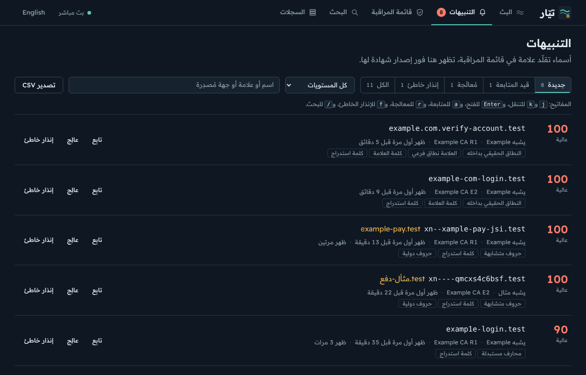
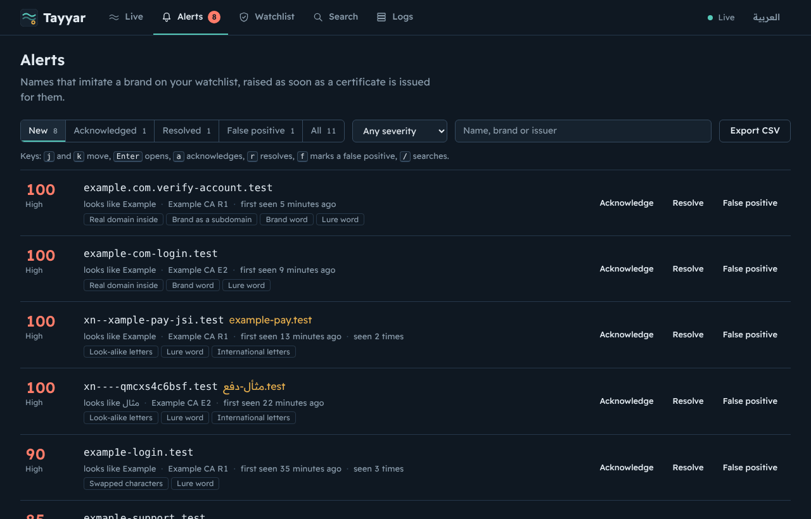
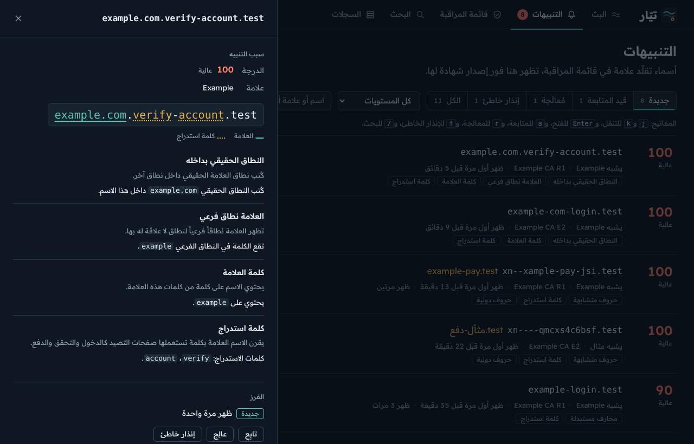
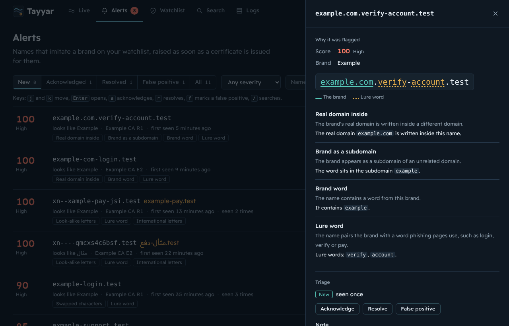
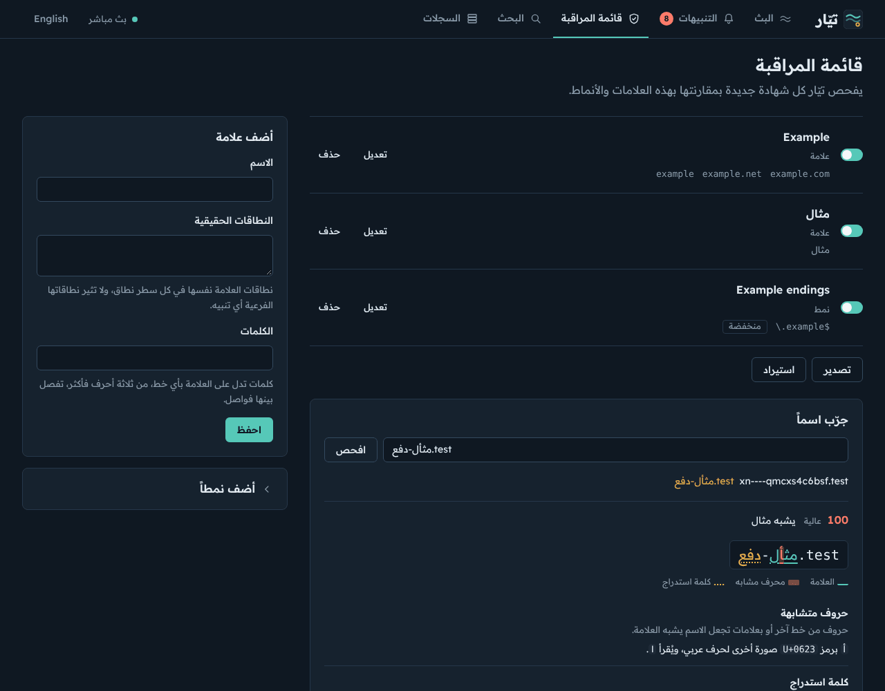
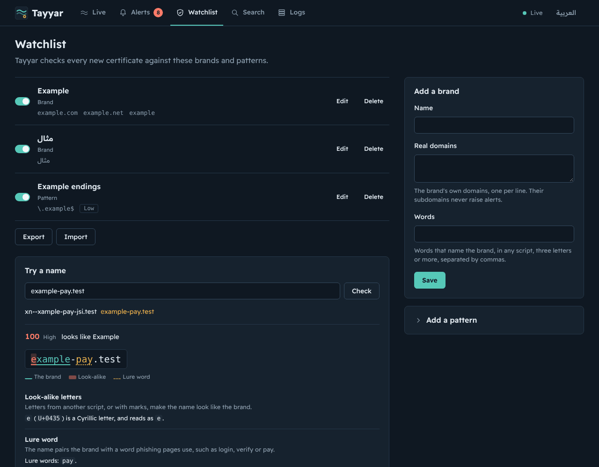
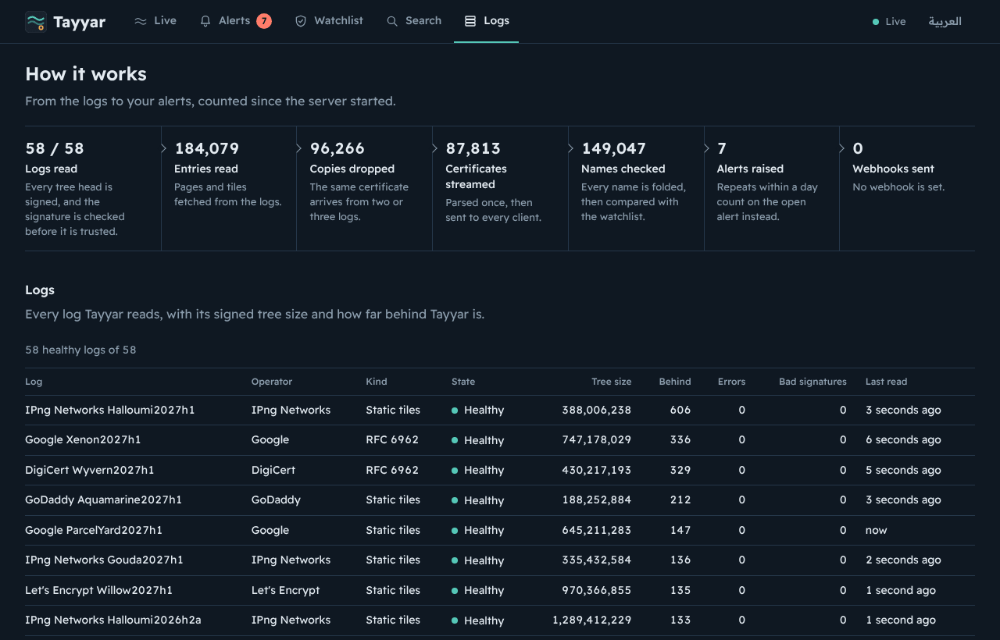
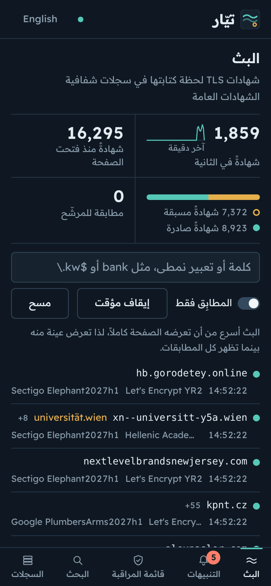

كل اسم يقلّد علامتكEvery name that imitates your brand
يقرأ تيّار سجلات شفافية الشهادات العامة وهي تكبر، فيرى كل اسم يقلّد علامتك حين تُسجَّل شهادته وقبل أن يصل إلى أحد.Tayyar reads the public Certificate Transparency logs as they grow, and sees each name that imitates your brand when its certificate is logged, before it reaches anyone.
npx github:SiteQ8/Tayyar serve
يكفيه Node 22 أو أحدث دون تثبيت أي مكتبة، ثم تفتح 127.0.0.1:4000 في متصفحك.All it needs is Node 22 or later, with nothing to install, and then you open 127.0.0.1:4000 in your browser.
الشيفرة على GitHubCode on GitHubجرّب اسماًTry a name
يجري الفحص في متصفحك ولا يُرسَل منه شيء، إذ يقارن الاسم بقائمة فيها علامتان هما مثال وExample بنطاقيها example.com وexample.net.The check runs in your browser and sends nothing. It compares the name with a watchlist of two brands: مثال, and Example with example.com and example.net.
مثأل-دفع.test
100عاليةHighيشبه مثالlooks like مثال
- حروف متشابهةLook-alike lettersأ برمز U+0623 صورة أخرى لحرف عربي، ويُقرأ ا.أ (U+0623) is another form of an Arabic letter, and reads as ا.
- كلمة استدراجLure wordكلمات الاستدراج: دفع.Lure words: دفع.
- حروف دوليةInternational lettersتكتبه الشهادة هكذا xn----qmcxs4c6bsf.test.The certificate writes it as xn----qmcxs4c6bsf.test.
العلامةThe brandمحرف مشابهLook-alikeكلمة استدراجLure word
أو جرّب أحد هذه الأسماءOr try one of these
حرفان يُقرآن حرفاً واحداًTwo letters, read as one
يوحّد تيّار الحروف التي يقرؤها الناس حرفاً واحداً قبل أن يقارن الأسماء، فالحرف الكيريلي الذي يشبه حرفاً لاتينياً يُعامَل معاملته، وكذلك الكاف الفارسية والكاف العربية والياء غير المنقوطة والتاء المربوطة والأرقام العربية، ثم يعلّم على الاسم الحرف المختلف ويذكر رمزه.Before it compares names, Tayyar folds the letters people read as one. A Cyrillic letter that looks Latin counts as that Latin letter, and so do the Persian and Arabic kaf, the dotless yeh, the teh marbuta and Arabic digits. Then it marks the odd letter on the name and gives its code point.
example
الكلمة الأصلية، وأول حروفها e لاتينيةThe real word, starting with a Latin eU+0065
еxample
الكلمة المقلِّدة، وأول حروفها е كيريليةThe imitation, starting with a Cyrillic еU+0435
تراهما كلمة واحدة مكررة، بينما يرى تيّار أن الثانية تبدأ بحرف كيريلي فيعلّمه لك.You see the same word twice. Tayyar sees that the second one starts with a Cyrillic letter, and marks it for you.
حروف يوحّدها تيّارLetters Tayyar folds
في كل مربع حرف يقلّد غيره، ومعه الحرف الذي يُقرأ مكانه ورمزه في يونيكود.Each square holds a letter that imitates another, with the letter it reads as and its Unicode code point.
أU+0623
ألف فوقها همزةAlef with hamza above
تُقرأ اreads as ا
ٱU+0671
ألف الوصلAlef wasla
تُقرأ اreads as ا
ىU+0649
ياء غير منقوطةDotless yeh
تُقرأ يreads as ي
ةU+0629
تاء مربوطةTeh marbuta
تُقرأ هreads as ه
ثـاU+0640
الكشيدةTatweel
تُحذفdropped
٣U+0663
ثلاثة بالأرقام العربيةArabic-Indic three
تُقرأ 3reads as 3
еU+0435
e كيريليةCyrillic e
تُقرأ ereads as e
аU+0430
a كيريليةCyrillic a
تُقرأ areads as a
оU+043E
o كيريليةCyrillic o
تُقرأ oreads as o
οU+03BF
أوميكرون يونانيةGreek omicron
تُقرأ oreads as o
1U+0031
الرقم واحدThe digit one
مكان lfor l
rnU+0072 U+006E
الحرفان r وn معاًAn r and an n together
مكان mfor m
كلمات الاستدراجLure words
وتزيد درجة الاسم خمس عشرة نقطة حين تأتي معه كلمة من الكلمات التي تستعملها صفحات التصيد، بالعربية أو بالإنجليزية.A name scores 15 points more when it also carries a word that phishing pages use, in Arabic or in English.
دخول تسجيل تحقق تأكيد تحديث حساب دفع سداد بطاقة بنك مكافأة جائزة استرداد مخالفات شحنة طرد بريد
login signin secure verify verification update account auth otp pay payment billing invoice refund wallet bank card reward gift prize claim confirm unlock support service kyc fines parcel delivery tracking customs
عشرة أسباب ودرجة من مئةTen reasons, one score out of 100
لكل اسم يشبه علامة في قائمتك درجة من مئة، فهو عالي الخطورة من ثمانين ومتوسطها من ستين ومنخفضها دون ذلك، ويرافق كل سبب دليله على الاسم نفسه.Every name that resembles a brand on your list gets a score out of 100: high from 80, medium from 60, low below that. Each reason comes with its evidence, on the name itself.
| السببReason | اسم يكشفهA name it catches | الدرجةScore |
|---|---|---|
| ما يرفع التنبيهWhat raises an alert | ||
| النطاق الحقيقي بداخلهReal domain insideكُتب نطاق العلامة الحقيقي داخل نطاق آخر.The brand's real domain is written inside a different domain. | example.com.verify-account.test | 90، أو 85 بشرطات90, or 85 with hyphens |
| حروف متشابهةLook-alike lettersحروف من خط آخر أو بعلامات تجعل الاسم يشبه العلامة.Letters from another script, or with marks, make the name look like the brand. | еxample.test | 85 |
| امتداد آخرOther endingالاسم نفسه الذي في نطاق العلامة لكن بامتداد آخر.The same name as the brand's domain, under a different ending. | example.test | 75 |
| محارف مستبدلةSwapped charactersأرقام أو أزواج حروف تحل محل حروف تشبهها، كالصفر مكان الحرف الذي يشبهه.Digits or letter pairs stand in for letters, such as 0 for o or rn for m. | examp1e.test | 75 |
| خطأ إملائيMisspellingيبعد الاسم عن العلامة حرفاً أو حرفين.The name is one or two letters away from the brand. | exmaple.test | من 55 إلى 7055 to 70 |
| كلمة العلامةBrand wordيحتوي الاسم على كلمة من كلمات هذه العلامة.The name contains a word from this brand. | example-shop.test | 55 |
| نمطكYour patternيطابق الاسم نمطاً في قائمة المراقبة.The name matches a pattern on your watchlist. | \.example$ | 45 أو 65 أو 8545, 65 or 85 |
| ما يزيد الدرجةWhat adds to the score | ||
| العلامة نطاق فرعيBrand as a subdomainتظهر العلامة نطاقاً فرعياً لنطاق لا علاقة له بها.The brand appears as a subdomain of an unrelated domain. | example.store.test | +10 |
| كلمة استدراجLure wordيقرن الاسم العلامة بكلمة تستعملها صفحات التصيد كالدخول والتحقق والدفع.The name pairs the brand with a word phishing pages use, such as login, verify or pay. | مثال-دفع.test | +15 |
| حروف دوليةInternational lettersيستعمل النطاق حروفاً دولية، لذا يظهر في شريط العنوان بشكل مختلف.The domain uses international letters, so it shows differently in the address bar. | مثال.testxn--mgbh0fb.test | +5 |
من 49 سجلاً إلى تنبيه واحدFrom 49 logs to one alert
يجلب تيّار قائمة Google العامة للسجلات الموثوقة ويختار منها ما يقبل الشهادات اليوم، فيقرأ النوعين معاً، أي سجلات RFC 6962 والسجلات الثابتة التي تُقدَّم في ملفات tile.Tayyar loads Google's public list of trusted logs and keeps the ones that accept certificates today. It reads both kinds: RFC 6962 logs, and static logs served as tiles.
وفي تجربة حية بتاريخ 25 سبتمبر 2026 قرأ تيّار 49 سجلاً، فبث نحو 1,200 شهادة فريدة في الثانية مستهلكاً قرابة ربع نواة واحدة من المعالج.In a live run on 25 September 2026, Tayyar read 49 logs and streamed about 1,200 unique certificates a second, using about a quarter of one CPU core.
يقرأRead
يشغّل لكل سجل عاملاً مستقلاً يقرأ رأس الشجرة الموقَّع ويتحقق من توقيعه قبل أن يثق بحجمها، ثم يجلب المدخلات الجديدة عبر get-entries أو من ملفات tile.One watcher per log reads the signed tree head and checks the log's signature before it trusts the size, then fetches the new entries, with get-entries or from tiles.
يصفّيReduce
يحذف النسخ المكررة لأن كل شهادة تُسجَّل في سجلين أو ثلاثة، ثم يحلل كل شهادة مرة واحدة ويبثها.It drops the copies, since each certificate is logged in two or three logs, then parses every certificate once and streams it.
يفحصCheck
يفحص كل اسم في الشهادة بمقارنته بقائمة المراقبة، فإن شابه علامة رفع تنبيهاً وبثه عبر WebSocket وأرسله إلى عناوين الويب.It checks every name on the certificate against the watchlist. When one imitates a brand it raises an alert, streams it over WebSocket and posts it to your webhooks.
ما يقدّمهWhat it does
كل السجلات موثَّقةEvery log, verified
يقرأ تيّار نوعي السجلات معاً، أي السجلات التي تتبع RFC 6962 والسجلات الثابتة، ويتحقق من توقيع كل رأس شجرة قبل أن يثق بحجمها.Tayyar reads both kinds of log, RFC 6962 and static tiles, and checks each log's signature on every tree head before it trusts the size.
المقلِّدات بالعربية أيضاًLook-alikes, in Arabic too
يكشف الأسماء التي تقلّد علامتك بحروف من خطوط أخرى أو بأرقام مكان الحروف أو بأخطاء إملائية أو بامتداد آخر، ويوحّد الحروف العربية المتشابهة كالكاف الفارسية والعربية.It spots names that imitate your brand with letters from other scripts, digits for letters, misspellings or another ending, and it unifies Arabic letters that read alike, such as the Persian and Arabic kaf.
تنبيهات تتابعها حتى النهايةAlerts you work through
لكل تنبيه درجة وأدلة ترسمها الواجهة على الاسم نفسه، أي حروف العلامة والمحارف المشابهة وكلمات الاستدراج، ثم تفرزه بلوحة المفاتيح بينما يبقى الإنذار الخاطئ صامتاً.Every alert has a score and evidence drawn on the name itself: the brand's letters, the look-alike characters and the lure words. Work through them from the keyboard, and false positives stay quiet.
إشعارات موقَّعةSigned webhooks
يرسل التنبيهات الجديدة إلى أي عنوان ويب بصيغة JSON أو نص، ويوقّع كل رسالة بمفتاح سري حتى يتأكد المستقبِل من مصدرها.New alerts go to any webhook as JSON or text, and every body is signed with HMAC SHA-256 so the receiver can check where it came from.
البحث وآخر ساعةSearch and the last hour
ابحث في آخر نصف مليون شهادة، واطّلع على أكثر الجهات إصداراً وأكثر الامتدادات ظهوراً خلال الساعة الأخيرة.Search the last half a million certificates, and see which issuers and endings led the last hour.
على جهازك وتحت سيطرتكOn your own machine
لا يعتمد على أي مكتبة خارجية ولا يرسل شيئاً إلى طرف ثالث، ويستمع على العنوان المحلي ما لم تطلب غير ذلك، ويحمي الواجهة برمز وصول حين يصل إليها غيرك.No dependencies and no third-party requests. It listens locally unless you say otherwise, and an access token guards the interface when others can reach it.
الشاشاتScreens
صور من واجهة تيّار وهي تعمل، والأسماء في شاشات التنبيهات وقائمة المراقبة متخيَّلة ومحجوزة للأمثلة.Pictures of Tayyar's interface as it runs. The names on the alert and watchlist screens are invented, from names reserved for examples.










الأوامرCommands
يعمل تيّار على Node 22 أو أحدث دون تثبيت، فشغّله ثم افتح العنوان المحلي في متصفحك.Tayyar runs on Node 22 or later with nothing to install. Start it, then open the local address in your browser.
npx github:SiteQ8/Tayyar serve --data ./tayyar-data
# http://127.0.0.1:4000/وحين يصل إليه غيرك فاحمِه برمز وصول وأرسل التنبيهات إلى عنوان ويب يوقّع تيّار رسائله إليه.When others can reach it, protect it with an access token and send alerts to a webhook, with every message signed.
TAYYAR_TOKEN='a long random secret' npx github:SiteQ8/Tayyar serve \
--host 0.0.0.0 --data /var/lib/tayyar \
--webhook text:https://example.com/hooks/tayyar --webhook-secret 'another secret'ومن سطر الأوامر تجرّب الأسماء بمقارنتها بقائمة المراقبة أو تتابع البث دون واجهة.From the command line you can test names against a watchlist, or follow the stream without the interface.
npx github:SiteQ8/Tayyar check --watchlist watchlist.json examp1e-pay.test
npx github:SiteQ8/Tayyar watch --watchlist watchlist.json --format jsonاربط أدواتكConnect your tools
كل مسار WebSocket يرسل رسائل JSON، فتبدأ بسطرين وتصلك التنبيهات على مسارها الخاص.Every WebSocket path sends JSON messages, so two lines are enough to start, and alerts have a path of their own.
/الشهادات دون بايتات DER والسلسلةCertificates, without the DER bytes or the chainWebSocket/full-streamالشهادات مع بايتات DER والسلسلةCertificates with their DER bytes and chainWebSocket/domains-onlyالأسماء فقطNames onlyWebSocket/alertsالتنبيهات الجديدة وكل تغيير عليهاNew alerts, and every change to themWebSocket/metricsالأرقام بصيغة نصية تقرؤها أنظمة المراقبةThe figures, in the Prometheus text formatHTTP
const ws = new WebSocket('ws://127.0.0.1:4000/alerts');
ws.onmessage = (e) => console.log(JSON.parse(e.data));إخلاء المسؤوليةDisclaimer
يُشارَك تيّار ليبيّن كيف تعمل مراقبة شفافية الشهادات، لذا يُقدَّم كما هو دون أي ضمان، ولا يتحمل صاحبه أي مسؤولية عن طريقة استخدامه أو عن أي قرار يُتخذ بناءً على نتائجه.Tayyar is shared to show how Certificate Transparency monitoring works. It comes as is, without warranty of any kind, and its author accepts no liability for how it is used or for any decision based on its output.
والتنبيهات تقديرات آلية، أي أن الاسم الذي يُنبَّه عليه ليس دليلاً على أن أحداً أخطأ، كما أن الاسم الذي لا يُنبَّه عليه ليس دليلاً على سلامته.Alerts are automated guesses: a flagged name is not proof that anyone did anything wrong, and a name that is not flagged is not proof that it is safe.
وأسماء العلامات والنطاقات في شاشات التنبيهات وقائمة المراقبة وفي أمثلة هذه الصفحة متخيَّلة ومحجوزة للأمثلة، بينما يعرض البث الحي شهادات عامة من سجلات الشفافية، فلا يعني ظهور أي اسم ادعاءً على أحد ولا ارتباطاً به.The brands and domains in the alert and watchlist screens and in the examples on this page are invented, using names reserved for examples, while the live stream shows public certificates from CT logs. No name shown implies a claim against anyone or any affiliation.
ثم إنك تشغّل تيّار على جهازك بنفسك، لذا تتحمل مسؤولية استخدامه واحترام سياسة الاستخدام لكل سجل يقرؤه.You run Tayyar on your own machine, so how you use it, and respecting each log's usage policy, are up to you.